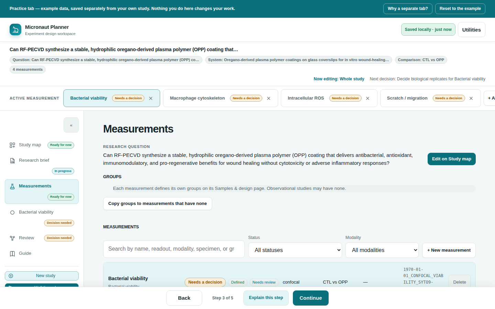

Chapter 5
Measurements Registry
A study can hold several measurements. This chapter is about the registry that lists them all, and about the badges and switcher that tell you, at a glance, which ones are actually done.
What you'll be able to do
- Understand what one "measurement" is, and why a study can hold more than one.
- Create a new measurement, and know what it does and doesn't inherit from the ones you already have.
- Search and filter the registry by name, readout, modality, specimen, group, or status.
- Read a registry row's columns, including its planned base filename.
- Tell apart a measurement's registry status and its switcher-bar progress badge — two different things, on purpose.
- Switch which measurement is active, from either the registry or the switcher bar in the app's chrome.
- Delete a measurement you no longer need, and know exactly what that removes.
What a measurement is
A measurement is one observation or analysis used to answer your study's research question — its own readout, panel, specimen, and modality. In some disciplines this is called an assay; Micronaut uses "measurement" throughout its own interface. A study can hold several of them at once — for example, a bacterial-viability stain and a separate ROS readout on the same wound-healing study — each with its own Samples & design, Acquisition, and Data plan, all reachable from one measurement page (see Research Brief and the next chapter, Acquisition & the Spectral View).
Two study-level facts sit above every measurement and are not edited here: the research question and the experimental unit. Both are set once on the Study map and only ever shown, read-only, on this page and on Samples & design — each with its own "Edit on Study map" link back. That keeps one fact with one owner, instead of two screens quietly drifting apart on what your research question actually says.
🔍 Why it works this way. Samples & design, Acquisition, and Data plan used to be three separate screens for a single implicit measurement. Once a study needed more than one, holding the connection between three screens in your head for each measurement got confusing fast — so they became three sections of one page per measurement, and the registry became the one place to see every measurement at once and jump into any of them.
Creating a measurement
- Open Measurements in the step nav.
- Click + New measurement above the registry list.
- The app opens that measurement's own page immediately, ready for you to fill in.
A new measurement starts with its own empty design, panel, and naming — nothing copies over automatically except its groups. If any existing measurement already has groups defined (the active one first, or else the first one found with any), the new measurement seeds an identical copy of that group list, so you don't have to retype "Control / Treatment" on every measurement of the same study. That seed is a suggestion, not a lock: edit it on the new measurement's own Samples & design page and your edit sticks, exactly like typing it in from scratch.
The same + Add measurement control also lives in the switcher bar at the top of the app (see Switching the active measurement below) — either one creates a measurement the identical way.
⚠️ Careful. A study is capped at 50 measurements. Past that, + New measurement disables itself and a toast explains why — there is no way to raise this cap from the interface.
Groups belong to each measurement
Groups — your comparison groups, such as a control and one or more treatment groups — are typed exactly once, per measurement, on that measurement's own Samples & design page (see Conditions, Groups & Controls). The registry only ever shows them, in the Groups column, plus one shortcut:
- Make sure the measurement whose groups you want to reuse is the active one (see below).
- Click Copy groups to measurements that have none, above the registry list.
- Every other measurement that has not yet defined its own groups gets a copy of the active measurement's group list. A measurement you already customized by hand is left alone — the toast tells you how many were applied and how many were skipped for that reason.
💡 Tip. Observational studies may legitimately have no groups at all on any measurement — nothing about this page forces you to invent one.
Searching and filtering the registry
Above the list itself sit three controls, all of which act on the list live as you use them:
- Search — matches against a measurement's name, readout, modality, specimen summary, and group names, all at once. It is a plain substring match, not fuzzy: a near-miss spelling will not surface a row, by design.
- Status — filters to one specific status on any one of the three status axes described below: All statuses, or one Definition status (Draft / Provisionally defined / Defined), one Plan status (Plan open / Needs a decision / Ready to acquire), or one Conformance status (Not checked / Blocked / Needs review / Checks pass) (see below).
- Modality — filters to one modality actually in use in this study (STED, confocal, widefield, light-sheet, SEM/TEM, Raman, or whatever else you've entered on Acquisition). The list of choices rebuilds itself from what your measurements actually contain, so it never offers a modality nothing uses.

💡 Tip. The empty-list message tells apart two different situations: "no measurements yet" (add your first one) versus "no measurement matches these filters" (loosen a filter or clear the search box) — so you're never left guessing which one it is.
Reading a row
Each row in the registry carries, left to right:
- Name, as a clickable button — the whole name opens that measurement's page. Under it, a short line showing the readout you've described (or a placeholder if you haven't yet).
- Status — a headline badge plus two smaller supporting chips, described below.
- Modality — whatever this measurement's Acquisition section has recorded, or an em dash if it's still blank.
- Groups — this measurement's own comparison groups, joined as "A vs B", or an em dash if none are set yet.
- Replicates — biological and/or technical replicate counts, whichever ones you've entered.
- Base filename — the filename stem this measurement's naming convention would currently produce, computed the identical way Samples & design computes it (see Conditions, Groups & Controls and Validation & Naming), so what you see here can never drift from what the Data plan step actually plans.
- Delete — only shown when the study has more than one measurement (see below).
Measurement statuses
A measurement's status isn't one word — it's three separate, honestly scoped questions, each answered on its own axis, in the register of a project tracker rather than a grading scheme. Every row, and the header of the measurement's own page, carries all three:
| Axis | Question it answers | Statuses, worst to best |
|---|---|---|
| Definition | Has the measurement itself actually been filled in? | Draft → Provisionally defined → Defined |
| Plan | Does this measurement still own an open decision? | Plan open → Needs a decision → Ready to acquire |
| Conformance | Do this measurement's export checks pass? | Not checked → Blocked → Needs review → Checks pass |
A row shows one headline badge — the first of the three axes, always checked in that order (Definition, then Plan, then Conformance), that isn't already at its own best status — plus the other two axes as smaller, muted chips beside it. The measurement's own page header shows the same three, unabbreviated. Splitting the old single word into three keeps each axis honest about what it actually checks, instead of one badge quietly speaking for all three at once.
⚠️ Careful. Ready to acquire — the plan axis's own best status — is scoped honestly: it means every open decision this measurement's own plan currently owns has been resolved, never that the experiment is correct, well-powered, or approved by anyone. It describes the plan's completeness, not the science, and it is a different claim from the conformance axis's Checks pass — always confirm real acquisition settings at the microscope.
Switching the active measurement
Exactly one measurement is "active" at a time — it's the one Samples & design, Acquisition, and Data plan all show when you visit those sections, and the one Research Brief's measurement-scoped fields apply to. There are two ways to change it:
- From the registry — click a measurement's name to open it, which also makes it the active one.
- From the switcher bar — a row of pills near the top of every screen, one per measurement, always visible regardless of which step you're on. Click a pill to make that measurement active without leaving the page you're on.
Each pill in the switcher bar carries its own small badge — and it shows the exact same headline badge the registry shows for that measurement (see above), read from the identical status record. The pill only has room for the headline, not the two supporting chips, but it can never disagree with the registry row: they're two renderings of one shared status, not two separate opinions.
💡 Tip. The step nav's own "Measurement" entry always names whichever measurement is currently active, rather than a generic label — so you can tell which one you're editing without opening the page.
Deleting a measurement
A Delete button appears on a registry row (and an on its switcher pill) only when the study has more than one measurement — a study is never allowed to end up with zero. Clicking either asks you to confirm in a plain browser dialog naming exactly what will go: the measurement's design, panel, and naming data, all together, with no undo.
⚠️ Careful. There is no separate "archive" state for a measurement the way there might be for other records — deleting one really does remove its design, panel, and naming data for good. If you might want it back, use Review's exports (Markdown, the raw JSON dump) to keep a copy first — see Review & Exports.
🧪 Try it. Open the example study (Study map's "Explore a completed example" card), then on Measurements try the Status and Modality filters one at a time — watch the list narrow, and watch the empty-state message change if you filter down to nothing.
Check yourself
You create a second measurement on a study that already has one with groups "Control" and "Treatment." Do the new measurement's groups come along automatically?
Yes — a brand-new measurement seeds its groups from an existing measurement that already has some (the active one first), so you don't retype them. It's a starting point, not a lock: editing the new measurement's own groups on its Samples & design page overrides the seed just like typing from scratch.
A measurement's switcher-bar pill shows "Needs a decision." Could its registry row show "Checks pass" for that same measurement at that same moment?
No. The pill's badge and the registry row's headline badge are read from the exact same status record — whichever of the three axes (definition, plan, conformance) is first not at its own best status is what both display, in the same fixed order. They can never disagree. To see the other two axes too, look at the registry row's chips or the measurement page's own header, which show all three at once.
You filter the registry to Status = "Draft" and see no rows, even though your study clearly has measurements. What does the empty-state message tell you?
It distinguishes "no measurements yet" from "no measurement matches these filters" — since you have measurements, you'll see the second message, telling you to loosen or clear a filter rather than to go add a first measurement.